📖
حماية الموارد
الفصل السادس: موارد الأرض والحفاظ عليها · الصفحات ١٧٦ – ١٨٣
❓ السؤال الأساسيكيف نحمي موارد الأرض ونحافظ على البيئة؟
💡 الزبدة⚖️ انتبهي للفرق🔍 توضيح⚠️ فخ في الاختبار✍️ حلّ سؤال الكتاب
في كل بطاقة فكرة واحدة: اقرئي فقرة الكتاب ثم حاشيتها، ثم اسحبي إلى البطاقة التالية 👈
أنظر وأتساءل
تلتقط الألواح الشمسية أشعة الشمس لكي تُستخدم موردًا للطاقة. يستخدم الناس موارد عديدة للطاقة، منها الوقود الأحفوري، والماء والرياح. فكيف تختلف موارد الطاقة هذه بعضها عن بعض؟ وكيف يمكن استخدام موارد الأرض بفاعلية أكبر؟
✍️ الجوابفكّري ثم اضغطي
الوقود الأحفوري محدود غير متجدد ويزيد التلوث، أما الشمس والماء والرياح فمصادر بديلة. ونستخدم الموارد بفاعلية أكبر بالقواعد الثلاث: الترشيد، وإعادة الاستخدام، والتدوير.
📝 مفردات الدرس
الطاقة الحرارية الجوفيةالطاقة الحرارية التي مصدرها باطن الأرض.
الكتلة الحيويةفضلات النباتات والحيوانات وبقاياها.
التكرير الحيويمعالجة الكتلة الحيوية في محطات خاصة لإنتاج الوقود.
الطاقة الكهرومائيةالطاقة الناتجة عن استخدام طاقة المياه الجارية لإنتاج الطاقة الكهربائية.
الخلايا الشمسيةأدوات تحوّل أشعة الشمس إلى طاقة كهربائية.
ص١٧٨ · كيف نحافظ على اليابسة والماء والهواء؟
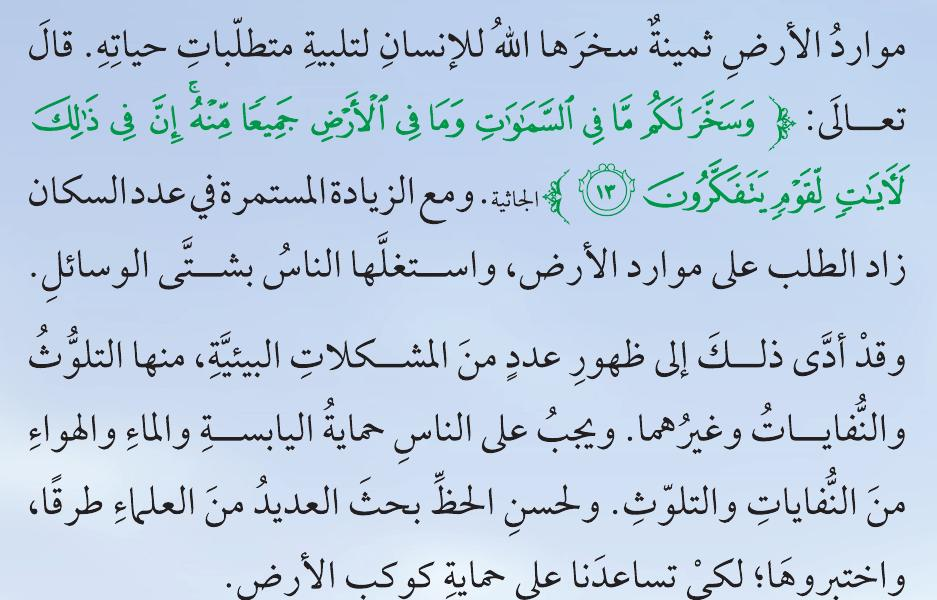
💡 الزبدة
مع الزيادة المستمرة في عدد السكان زاد الطلب على موارد الأرض، وأدى ذلك إلى مشكلات بيئية، منها التلوث والنفايات. فيجب على الناس حماية اليابسة والماء والهواء من النفايات والتلوث.
ص١٧٨ · كيف نحافظ على اليابسة والماء والهواء؟
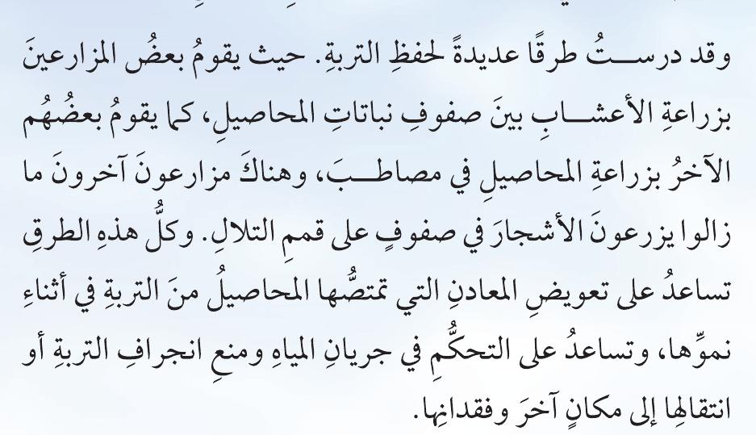
🔍 تذكّري من الدرس السابق
طرق حفظ التربة: زراعة الأعشاب بين صفوف المحاصيل، والزراعة في المصاطب، وزراعة الأشجار في صفوف على قمم التلال. وهذه الطرق تعوّض المعادن، وتتحكم في جريان المياه، وتمنع انجراف التربة.
ص١٧٩ · التدوير والمحافظة على الماء
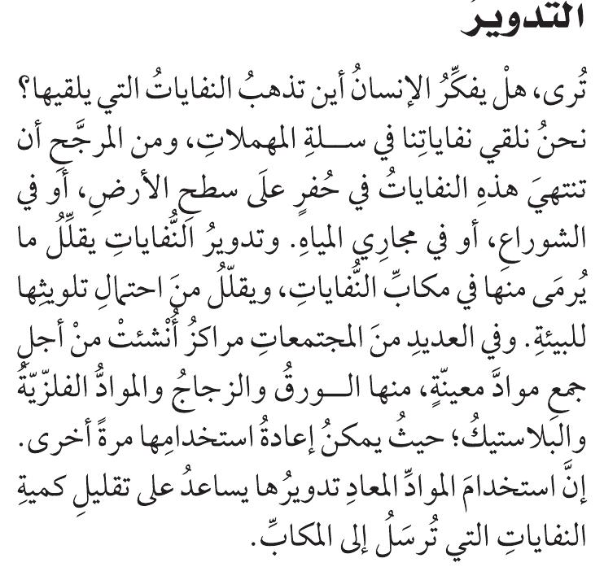
💡 الزبدة
التدوير يقلل ما يُرمى منها في مكبّات النفايات، ويقلل من احتمال تلويثها للبيئة. فالورق والزجاج والمواد الفلزية والبلاستيك يمكن إعادة استخدامها مرة أخرى.
ص١٧٩ · التدوير والمحافظة على الماء
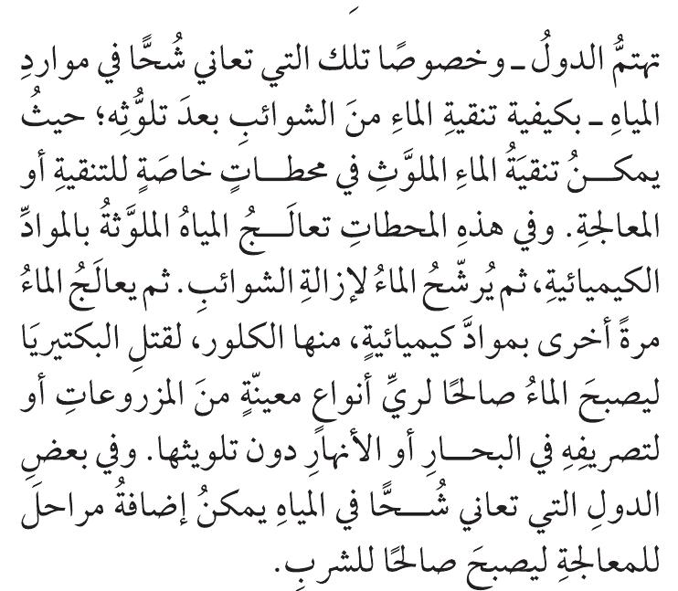
💡 الزبدة
يمكن تنقية الماء الملوّث في محطات خاصة للتنقية أو المعالجة، ثم يُستخدم لري أنواع معينة من المزروعات أو يُصرف في البحار. وفي الدول التي تعاني شحًا في المياه يمكن إضافة مراحل للمعالجة ليصبح صالحًا للشرب.
ص١٧٩ · التدوير والمحافظة على الماء
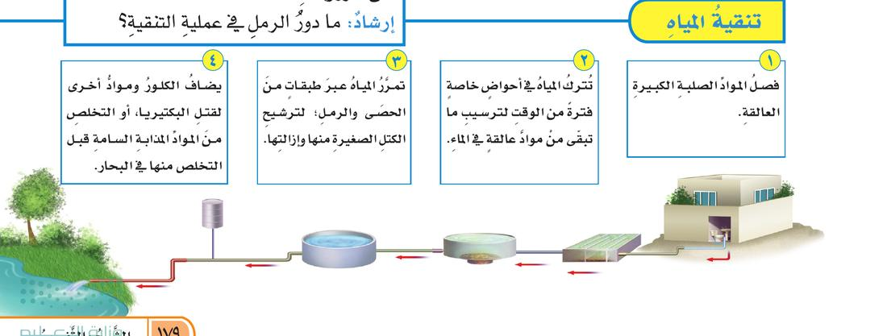
🔍 مراحل تنقية المياه
١- فصل المواد الصلبة الكبيرة العالقة.
٢- تُترك المياه في أحواض فترة من الوقت لترسيب ما تبقى من مواد عالقة.
٣- تمرّ المياه عبر طبقات من الحصى والرمل لترشيح الكتل الصغيرة.
٤- يضاف الكلور ومواد أخرى لقتل البكتيريا.
٢- تُترك المياه في أحواض فترة من الوقت لترسيب ما تبقى من مواد عالقة.
٣- تمرّ المياه عبر طبقات من الحصى والرمل لترشيح الكتل الصغيرة.
٤- يضاف الكلور ومواد أخرى لقتل البكتيريا.
✍️ حلّ «أقرأ الشكل»اضغطي لتري الإجابة
تمرّ المياه عبر طبقات من الحصى والرمل لترشيح الكتل الصغيرة منها وإزالتها.
ص١٧٩ · التدوير والمحافظة على الماء
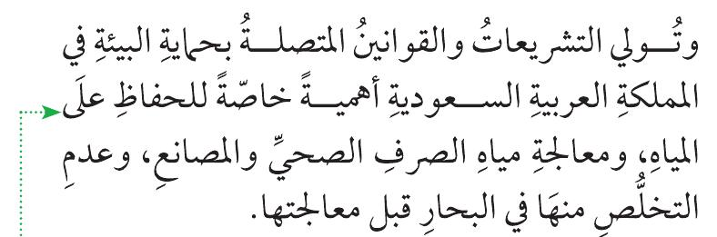
🔍 توضيح
تولي المملكة العربية السعودية أهمية خاصة للحفاظ على المياه ومعالجة مياه الصرف الصحي والمصانع، وعدم التخلص منها في البحار قبل معالجتها. ومن أهداف رؤية ٢٠٣٠: ضمان استدامة الموارد المائية.
ص١٧٩ · التدوير والمحافظة على الماء
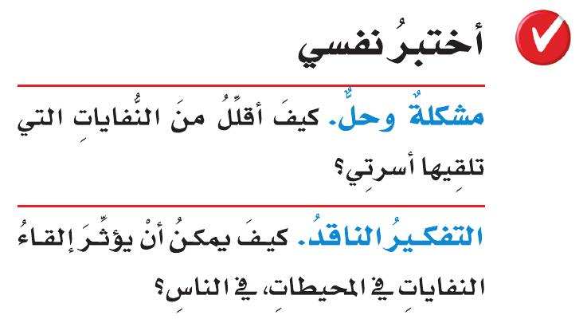
✍️ حلّ «أختبر نفسي»اضغطي لتري الإجابة
مشكلة وحل: بتدوير الورق والزجاج والمواد الفلزية والبلاستيك، وإعادة استخدام المنتجات.
التفكير الناقد: تتلوث مياه المحيطات، فتتضرر المخلوقات الحية التي تعيش فيها، ومنها الأسماك التي يأكلها الناس.
التفكير الناقد: تتلوث مياه المحيطات، فتتضرر المخلوقات الحية التي تعيش فيها، ومنها الأسماك التي يأكلها الناس.
ص١٨٠ · كيف نقلل حرق الوقود الأحفوري؟
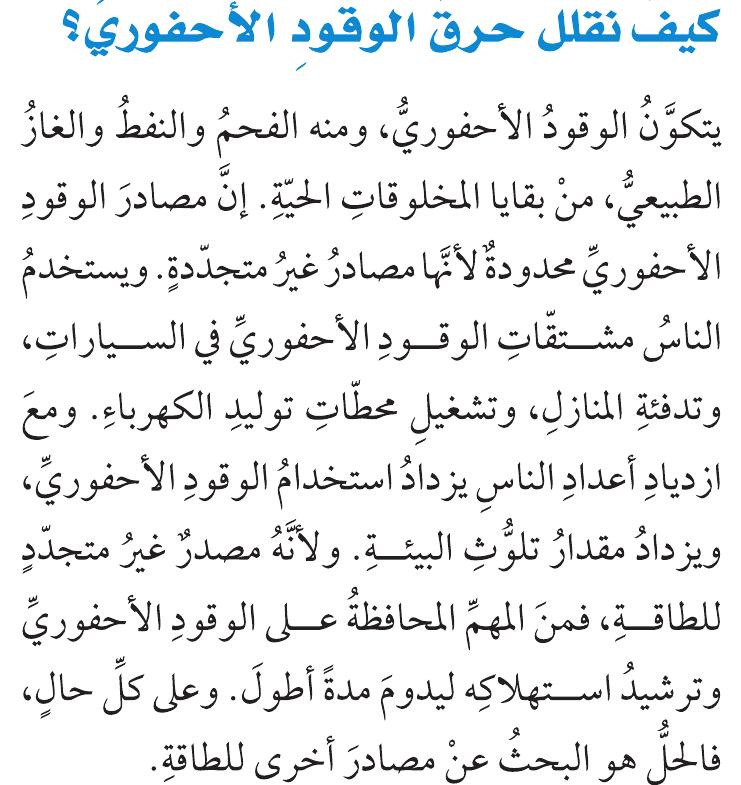
💡 الزبدة
يتكوّن الوقود الأحفوري، ومنه الفحم والنفط والغاز الطبيعي، من بقايا المخلوقات الحية. وهو محدود غير متجدد، ومع ازدياد استخدامه يزداد تلوث البيئة. لذا من المهم المحافظة عليه وترشيد استهلاكه، والبحث عن مصادر أخرى للطاقة.
ص١٨٠ · كيف نقلل حرق الوقود الأحفوري؟
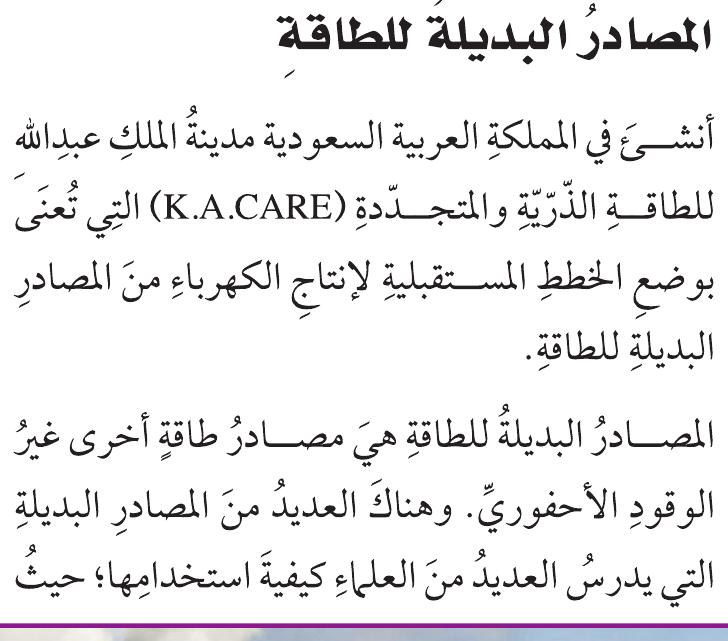
💡 الزبدة
المصادر البديلة للطاقة: مصادر طاقة أخرى غير الوقود الأحفوري.
🔍 توضيح
أُنشئت في المملكة العربية السعودية مدينة الملك عبدالله للطاقة الذرية والمتجددة (K.A.CARE) التي تعنى بوضع الخطط لإنتاج الكهرباء من المصادر البديلة.
ص١٨٠ · كيف نقلل حرق الوقود الأحفوري؟
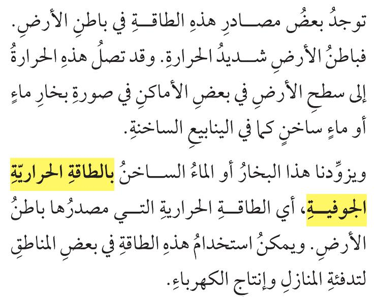
💡 الطاقة الحرارية الجوفية
البخار أو الماء الساخن من باطن الأرض الشديد الحرارة، تصل حرارته إلى سطح الأرض في بعض الأماكن كما في الينابيع الساخنة، ويُستخدم لتدفئة المنازل وإنتاج الكهرباء.
ص١٨٠ · كيف نقلل حرق الوقود الأحفوري؟
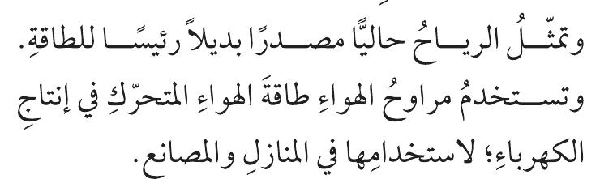
💡 طاقة الرياح
تمثّل الرياح حاليًا مصدرًا بديلًا رئيسًا للطاقة، وتُستخدم مراوح الهواء لإنتاج الكهرباء.
ص١٨٠ · كيف نقلل حرق الوقود الأحفوري؟
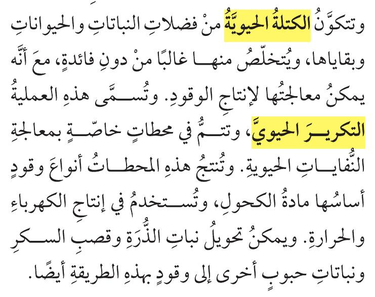
💡 الكتلة الحيوية
الكتلة الحيوية: فضلات النباتات والحيوانات وبقاياها. والتكرير الحيوي: معالجتها في محطات خاصة لإنتاج أنواع وقود أساسها الكحول. ويمكن تحويل نبات الذرة وقصب السكر إلى وقود بهذه الطريقة.
⚠️ فخ في الاختبار
فضلات الكتلة الحيوية يُتخلص منها غالبًا من دون فائدة، مع أنه يمكن معالجتها لإنتاج الوقود.
ص١٨١ · الطاقة الكهرومائية والشمسية
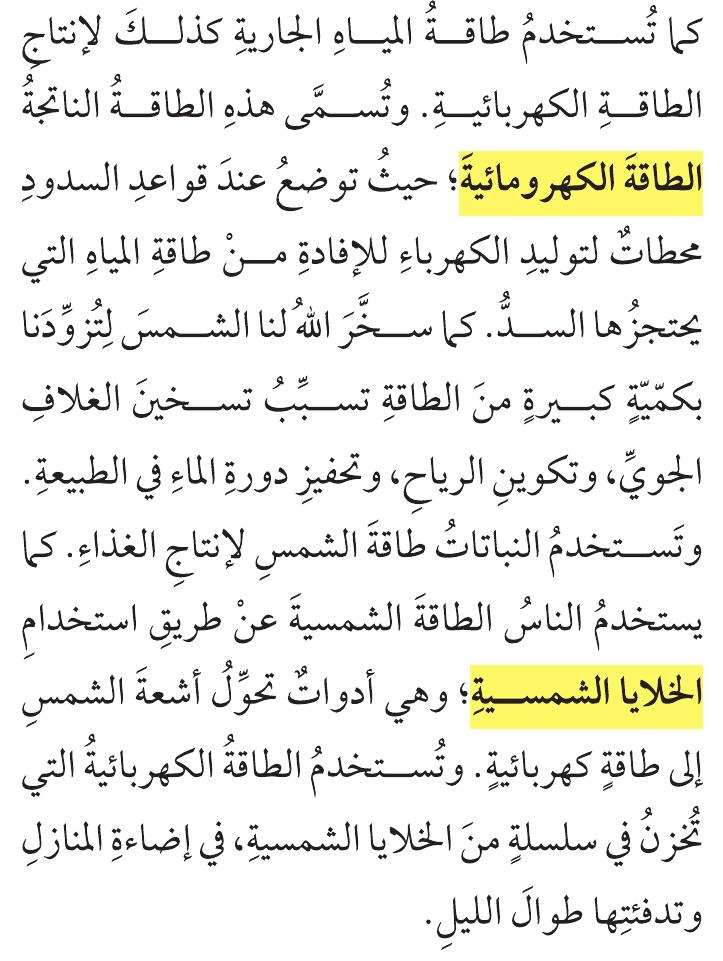
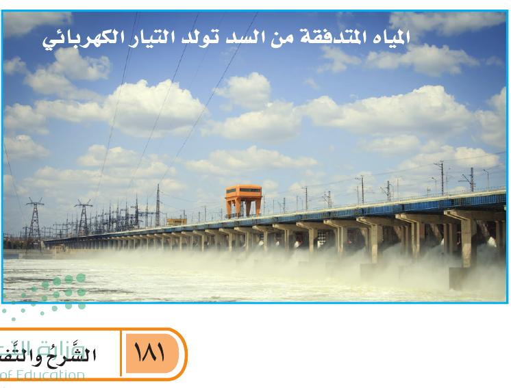
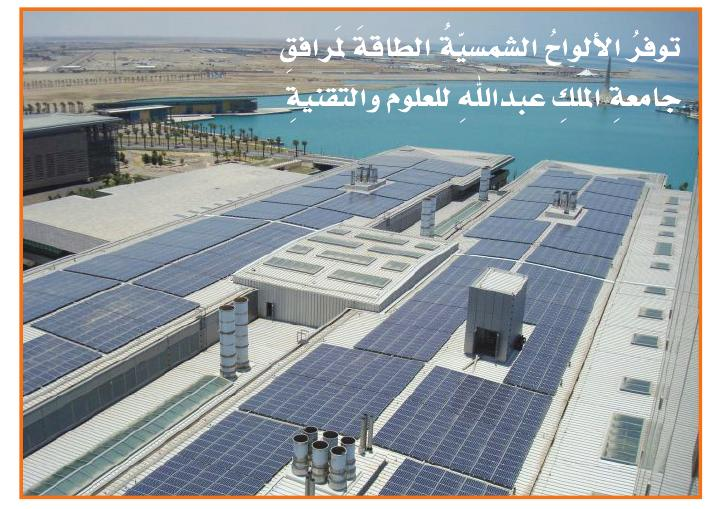
💡 الزبدة
الطاقة الكهرومائية: تُستخدم طاقة المياه الجارية لإنتاج الطاقة الكهربائية، حيث توضع عند قواعد السدود محطات لتوليد الكهرباء.
💡 الزبدة
الشمس تزوّدنا بطاقة كبيرة تسخّن الغلاف الجوي، وتكوّن الرياح، وتحفّز دورة الماء.
الخلايا الشمسية: أدوات تحوّل أشعة الشمس إلى طاقة كهربائية، وتُخزّن لإضاءة المنازل وتدفئتها طوال الليل.
الخلايا الشمسية: أدوات تحوّل أشعة الشمس إلى طاقة كهربائية، وتُخزّن لإضاءة المنازل وتدفئتها طوال الليل.
ص١٨١ · الطاقة الكهرومائية والشمسية
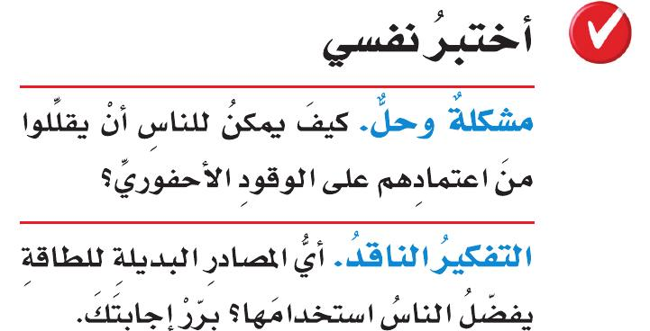
✍️ حلّ «أختبر نفسي»اضغطي لتري الإجابة
مشكلة وحل: باستخدام المصادر البديلة للطاقة: الشمس، والرياح، والماء الجاري، والحرارة الجوفية، والكتلة الحيوية.
التفكير الناقد: الطاقة الشمسية مثلًا؛ لأنها متجددة ولا تلوث البيئة.
التفكير الناقد: الطاقة الشمسية مثلًا؛ لأنها متجددة ولا تلوث البيئة.
ص١٨٢ · القواعد الثلاث للمحافظة على البيئة
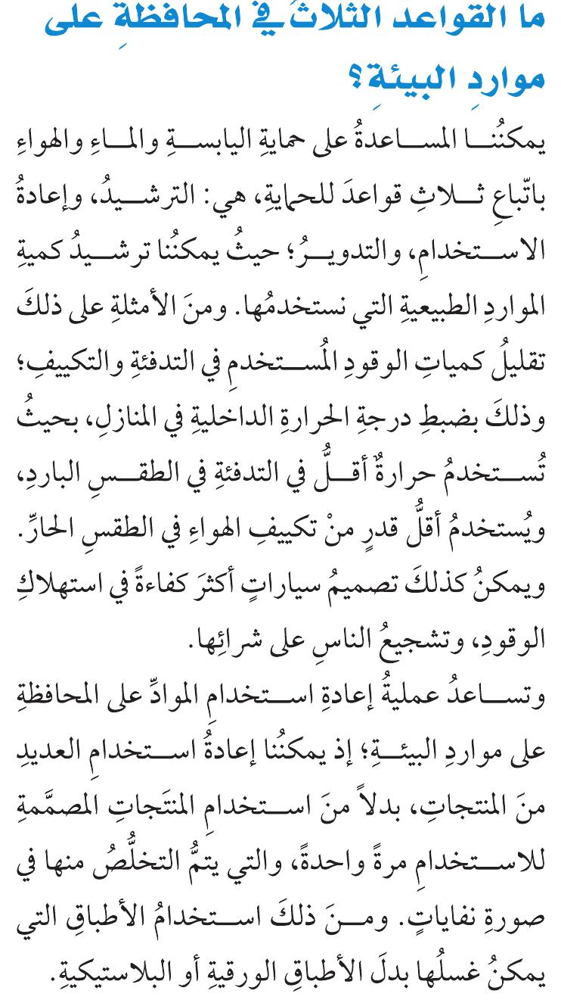
💡 الزبدة
القواعد الثلاث: الترشيد، وإعادة الاستخدام، والتدوير.
🔍 الترشيد
تقليل كميات الوقود المستخدم في التدفئة والتكييف بضبط درجة الحرارة داخل المنازل، وتصميم سيارات أكثر كفاءة في استهلاك الوقود، وتشجيع الناس على شرائها.
🔍 إعادة الاستخدام
استخدام المنتجات عدة مرات، بدلًا من المنتجات المصممة للاستخدام مرة واحدة، ومن ذلك الأطباق التي يمكن غسلها بدل الأطباق الورقية أو البلاستيكية.
ص١٨٢ · القواعد الثلاث للمحافظة على البيئة
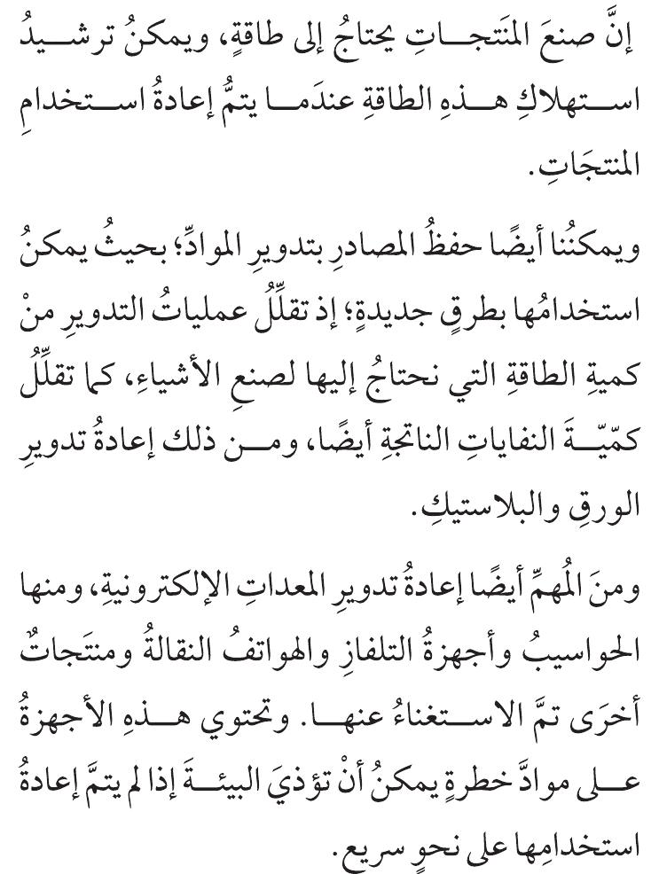
🔍 التدوير
يحفظ المصادر بإعادة استعمال المواد، ويقلل كمية الطاقة التي نحتاج إليها لصنع الأشياء، ويقلل كمية النفايات. ومن ذلك تدوير الورق والبلاستيك والمعدات الإلكترونية.
⚠️ فخ في الاختبار
المعدات الإلكترونية قد تحوي مواد خطرة يمكن أن تؤذي البيئة إذا لم يتم إعادة استخدامها على نحو سريع.
ص١٨٢ · القواعد الثلاث للمحافظة على البيئة
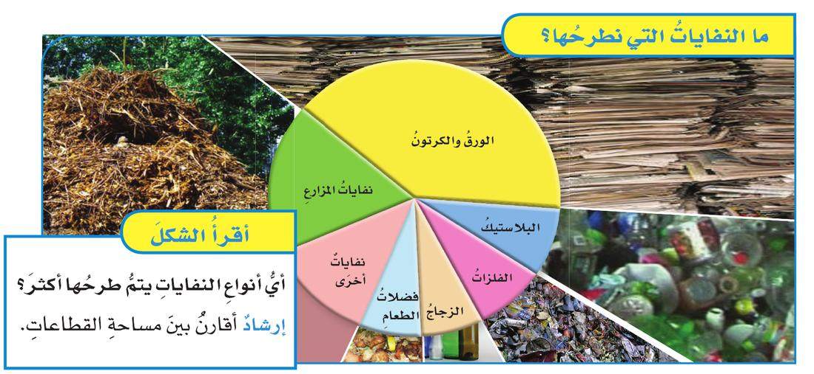
✍️ حلّ «أقرأ الشكل»اضغطي لتري الإجابة
الورق والكرتون؛ لأن قطاعه هو الأكبر.
ص١٨٢ · القواعد الثلاث للمحافظة على البيئة
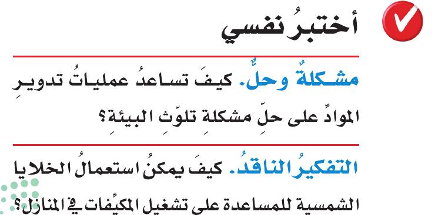
✍️ حلّ «أختبر نفسي»اضغطي لتري الإجابة
مشكلة وحل: يقلل التدوير كمية النفايات التي تُرمى في البيئة، ويقلل الطاقة اللازمة لصنع الأشياء.
التفكير الناقد: تحوّل الخلايا الشمسية أشعة الشمس إلى طاقة كهربائية تشغّل المكيفات، فنقلل استخدام الوقود الأحفوري.
التفكير الناقد: تحوّل الخلايا الشمسية أشعة الشمس إلى طاقة كهربائية تشغّل المكيفات، فنقلل استخدام الوقود الأحفوري.
📌 الخلاصة · خريطة المفاهيم
🌍 موارد الأرضيابسة · ماء · هواء · طاقة
⬇زيادة الطلب عليها سببت
⚠️ المشكلاتالتلوث والنفايات
⬇ونحلّها بـ
♻️ الحلولالترشيد · إعادة الاستخدام · التدوير
⬇وبالتحول إلى
☀️ المصادر البديلةشمس · رياح · ماء جارٍ · حرارة جوفية · كتلة حيوية
الوقود الأحفوري
- الفحم والنفط والغاز الطبيعي
- من بقايا المخلوقات الحية
- محدود غير متجدد
- يزيد التلوث
حماية الماء
- محطات التنقية والمعالجة
- ترسيب ثم ترشيح ثم الكلور
📌 الخلاصة · مصادر الطاقة
⛽الوقود الأحفوري
مصدرهبقايا المخلوقات الحية: الفحم والنفط والغاز
تذكّريغير متجدد، ويزيد التلوث
♨️الحرارية الجوفية
مصدرهاباطن الأرض: البخار والماء الساخن
💧الكهرومائية
مصدرهاالمياه الجارية عند قواعد السدود
☀️الشمسية
مصدرهاأشعة الشمس عبر الخلايا الشمسية
🌬️الرياح
مصدرهامراوح الهواء
🌽الكتلة الحيوية
مصدرهافضلات النباتات والحيوانات، تعالَج بالتكرير الحيوي
📌 الخلاصة · لا تخلطي بينها
الحرارية الجوفيةباطن الأرض: البخار والماء الساخن
الكهرومائيةالمياه الجارية عند قواعد السدود
الشمسيةأشعة الشمس عبر الخلايا الشمسية
طاقة الرياحمراوح الهواء
الكتلة الحيويةفضلات النباتات والحيوانات بالتكرير الحيوي
📌 الخلاصة · لا تخلطي بينها
الترشيد
الفكرةتقليل ما نستهلكه
مثالضبط حرارة المنزل
إعادة الاستخدام
الفكرةاستخدام المنتج عدة مرات
مثالالأطباق التي تُغسل
التدوير
الفكرةإعادة استعمال المواد في صنع أشياء جديدة
مثالالورق والبلاستيك
📌 الخلاصة · أهم النقاط
- زيادة عدد السكان زادت الطلب على الموارد، فظهرت مشكلات التلوث والنفايات.
- التدوير يقلل النفايات، ويمكن تنقية الماء الملوث في محطات خاصة.
- الوقود الأحفوري محدود غير متجدد، فنبحث عن مصادر بديلة.
- المصادر البديلة: الطاقة الحرارية الجوفية، والرياح، والكتلة الحيوية، والكهرومائية، والشمسية.
- القواعد الثلاث: الترشيد، وإعادة الاستخدام، والتدوير.
🧠 اختبري نفسك · ١ من ٤
لماذا نبحث عن مصادر بديلة للوقود الأحفوري؟
✅ الجوابفكّري ثم اضغطي
لأنه محدود غير متجدد، ويزيد من تلوث البيئة.
🧠 اختبري نفسك · ٢ من ٤
ما الأدوات التي تحوّل أشعة الشمس إلى طاقة كهربائية؟
✅ الجوابفكّري ثم اضغطي
الخلايا الشمسية.
🧠 اختبري نفسك · ٣ من ٤
ما اسم معالجة فضلات النباتات والحيوانات لإنتاج الوقود؟
✅ الجوابفكّري ثم اضغطي
التكرير الحيوي.
🧠 اختبري نفسك · ٤ من ٤
استخدام الأطباق التي تُغسل بدل الأطباق الورقية مثال على أي قاعدة؟
✅ الجوابفكّري ثم اضغطي
إعادة الاستخدام.
🌟
أحسنتِ!
أنهيتِ مذاكرة الدرس. الآن جاء دور التحديات، وتذكّري: أول محاولة هي المحسوبة 🎯
🎮 انتقلي إلى التحديات📄 الدرس ملف PDF